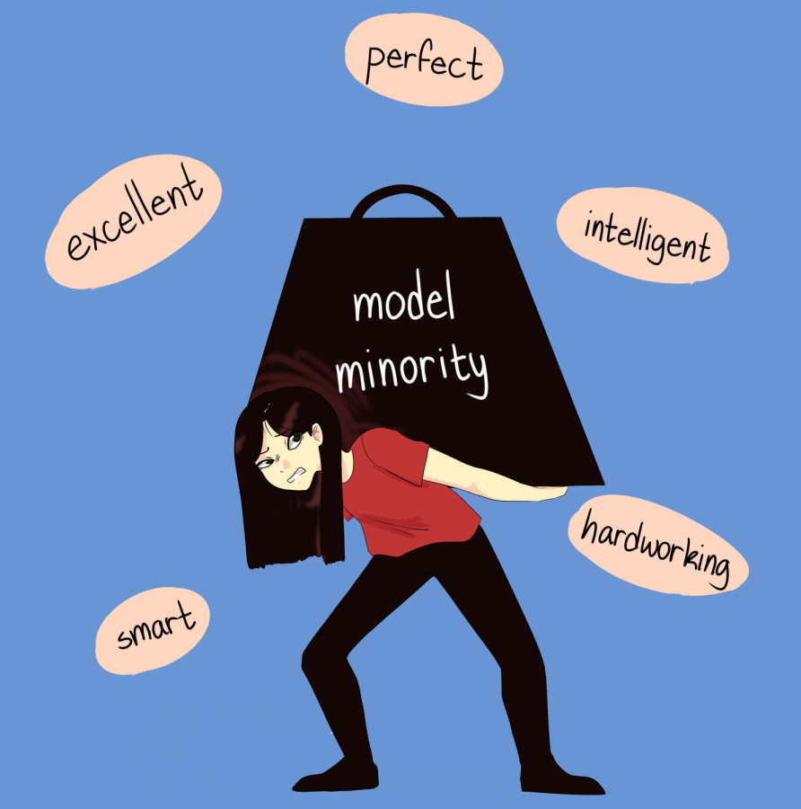

About
The “model minority” refers to a minority group that is perceived to be more successful than the overall population. In the United States, this myth mostly applies to Asian-Americans. Although it is true that many Asian-Americans have attained high achievements, not many people know the cultural context behind it. Furthermore, the model minority myth is harmful against Asian-Americans and is used as a weapon to put down other minorities.
In this festival, we will have our speakers discuss this myth and truth behind it. Not only that, you will have the opportunity to learn how to speak up against it and how to support your Asian-Americans friends and family.